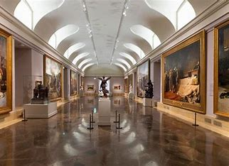

Museo Nacional Centro de Arte Reina Sofía
Cuando veas el Guernica de Picasso, de casi ocho metros de ancho, te quedarás fascinado. Se encuentra en Madrid.
Museo Nacional del Prado
entre los más conocidos del mundo. Obras maestras de Velázquez, Goya o Rubens esperan ser contempladas en Madrid.
Ciudad de las Artes y las Ciencias
¿Qué quieres visitar antes? ¿Su Oceanogràfic? ¿Su Museo de las Ciencias? ¡Diviértete en Valencia!
Teatro-Museo Dalí
Un auténtico homenaje al surrealismo. Así es este edificio de Figueres (Girona) en el que Dalí fue enterrado.
Museo Guggenheim Bilbao
El exterior de este museo bilbaíno, hecho con placas de titanio, seguro que te llama la atención.
Museo Picasso Barcelona
Picasso, su arte y su vida en Barcelona. Sus exposiciones temporales con frecuencia estudian su relación con otros artistas.
Museo Nacional Thyssen-Bornemisza Madrid
Un paseo por la historia del arte del siglo XIII al siglo XX con obras de artistas como Durero, Rafael, Rubens, Manet, Van Gogh, Hopper…
Museo Picasso Málaga
No podía faltar en esta lista la ciudad de Málaga, el lugar de nacimiento del famoso artista Pablo Picasso.
Museo Nacional de Arte Romano
Es obra de Rafael Moneo, está en Mérida y resulta fundamental para entender a la antigua civilización romana.